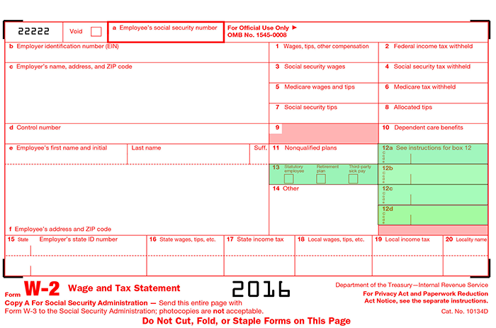

The taxpayer's wages and salary is found on line 7 of the tax return. While this item appears on a single line, the taxpayer's compensation is far from one-dimensional. An individual or couple may have salaries from more than one source. In addition, the wage amount on Line 7 could include regular salary, bonus amounts, stock option income, commission income, special pay allowances, and deferred income. Each of these various types of income brings with it an ability to plan and help the client. How do you discern these things?
To gain more insight into the client's compensation, go to the attached W-2 Wage and Tax Statement. It may provide additional detail on the client's compensation and help you identify additional opportunities. Of particular interest is Box 12, which may have one or more entries consisting of a letter followed by a dollar amount. Click the highlighted areas on the W-2 for more information.
